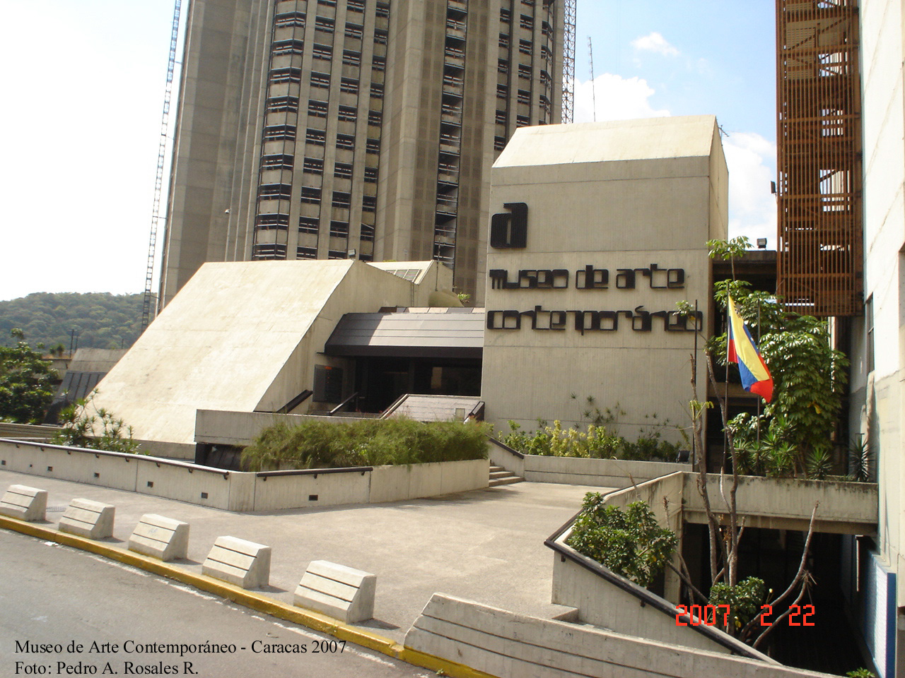
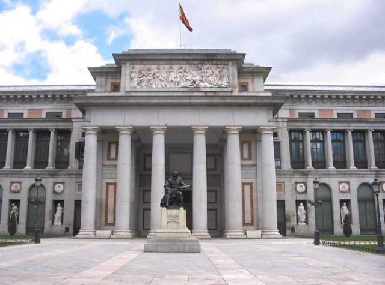

No se puede pasar por alto este museo donde hay exhibiciones temporales de diversos géneros artísticos
como pintura, escultura, cine, video y fotografía, de artistas plásticos venezolanos e internacionales.
En esta edificación hay una completa biblioteca de arte, un taller creativo, una plaza, un hermoso jardín de esculturas,
una tienda, un café donde relajarse y una librería.
Algunos de los artistas cuyas obras se expusieron en este museo de Venezuela son: Picasso, Chagall, Miró, Poliakov, Braque, Botero, Soto, entre otros.

Museo de Bellas Artes
Situado en la capital venezolana, este museo de Venezuela se inauguró en el año 1938, y posee una colección permanente,
cuyas piezas se agrupan según correspondan a Arte europeo medieval y moderno, Arte contemporáneo europeo y norteamericano, Cubismo,
Arte latinoamericano, Dibujo y Estampas ó Arte egipcio.

Museo de los Niños
Este museo, que dista bastante de parecerse a un museo convencional, es un centro educativo y de recreación
que ofrece recursos para que los niños aprendan en libertad participando de las áreas del establecimiento, que son: Ecología, Física,
Biología, Astronáutica, Comunicación, Astronomía, Drogas y Arte. Este museo de Venezuela es una excelente opción si se visita el país con niños.